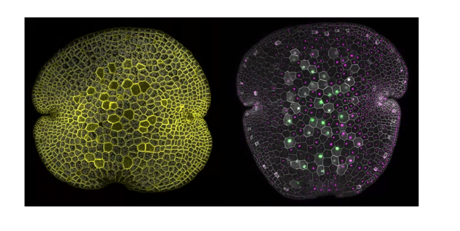
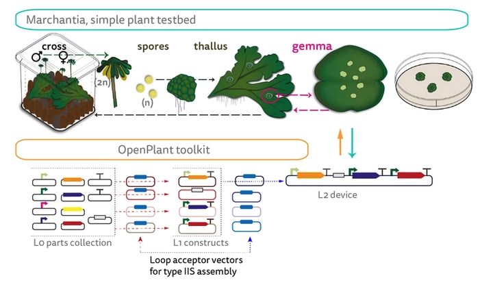

OpenPlant toolkit

A paper from Jim Haseloff's lab on a low maintenance model plant for bioengineering. The paper describes the process for maintaining genetic lines in the plant Marchantia polymorpha without the need for greenhouse facilities. It presents the work they've done to make the DNA easily editable (such as screening for promoters) for bioengineering purposes and demonstrates the expression of fluorescent proteins in the plant. They've released this work in the form of the OpenPlant DNA toolkit.

Marchantia polymorpha is a "simple plant with an open form of development that allows direct visualization of gene expression and dynamics of cellular growth in living tissues." as stated in the paper by S. Sauret-Gueto, E. Fangedakis, L. Silvestri, M. Rebmann, M. Tomaselli, K. Marke, M. Delmans, A. West, N. Patron and J. Haseloff
As part of the larger project OpenPlant Synthetic Biology Research Center, this publication is a step toward making synthetic biology more accessible to labs. The center has organized all the information on Marchantia on their website, including protocols and genome editing tools.